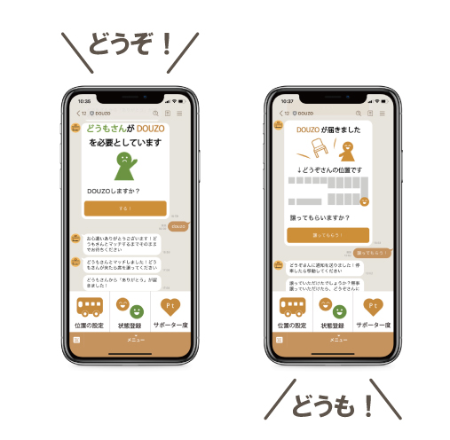
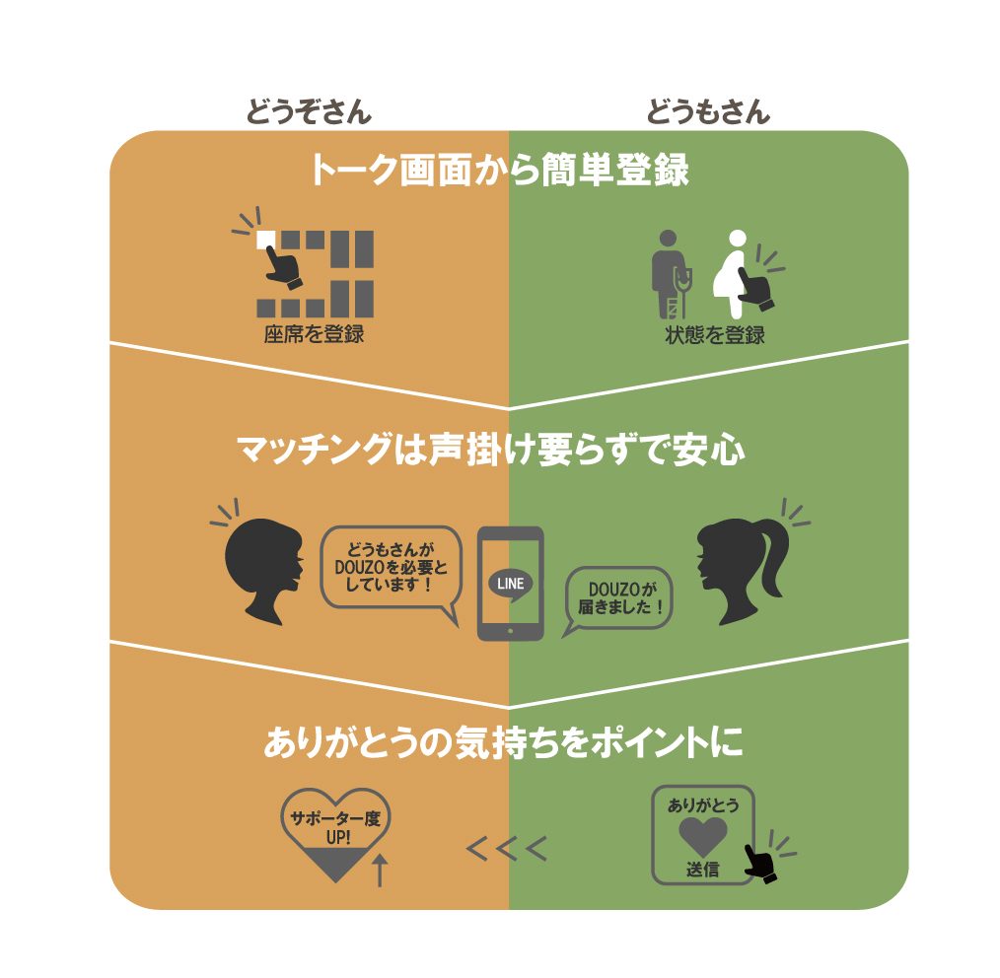
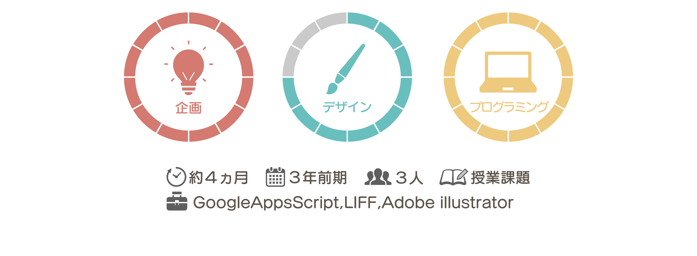

momo'sPortfolio
作品一覧
卒業研究
プロフィール
”DOUZO”で座席の譲り合いを気持ちよく
アイデアの企画から実装、プレゼンテーションを行う授業課題作品

DOUZOは、席を譲りたいけど声をかけにくい"どうぞさん"と、
妊婦や高齢者への暴言などの背景から、譲ってほしいと言いずらい"どうもさん"を
仲介しマッチングさせるLINEbotです。

"どうもさん"が感謝の気持ちを送ると"どうぞさん"のサポーター度が溜まっていきます。
サポーター度は近隣店舗のクーポンと交換でき、どうぞさんにも地域にも嬉しいシステムに。
